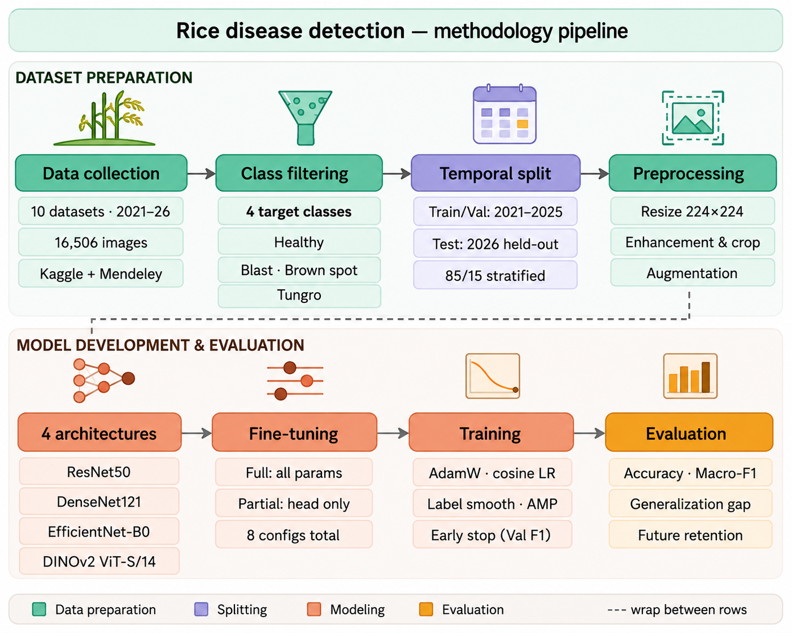
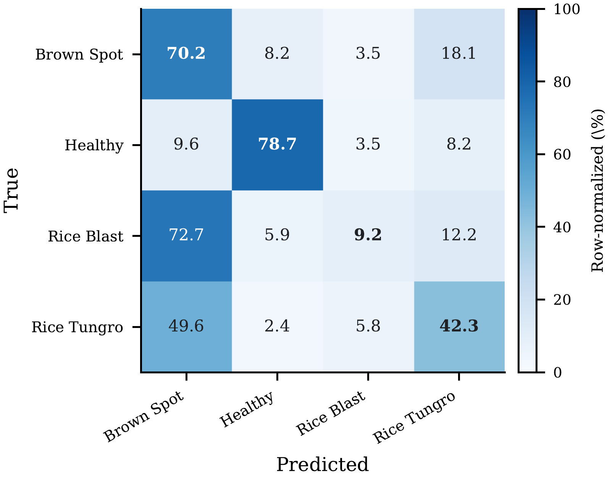
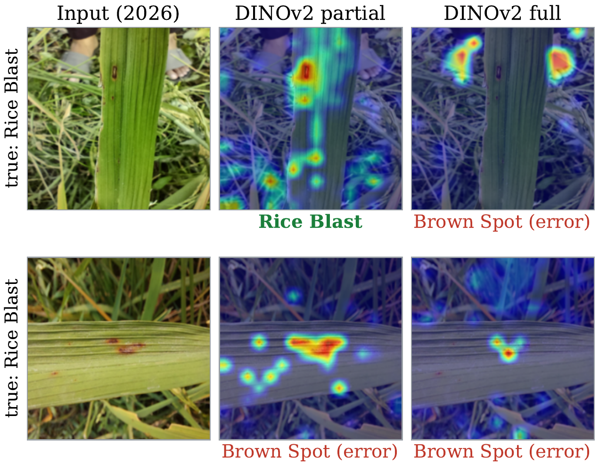

Leveraging Temporal Distribution Shifts for Rice Disease Detection
Abstract
Rice diseases threaten agricultural yield and food security in Bangladesh. Most automated detection studies train and test on images from a single time period, so temporal generalization goes unmeasured. We evaluate deep learning models trained on Bangladeshi rice field images from 2021 to 2025 and tested only on held-out 2026 data. Four architectures were compared under full and partial transfer learning: ResNet50, EfficientNet-B0, DenseNet121, and DINOv2. Two claims were specified before testing and assessed with seed-matched paired tests, assumption checks, Holm correction, effect sizes, and confidence intervals. The shift is visible in the images themselves, which lose 52.06% of their structural similarity across the partition boundary against a 9.29% within-partition control. Over 10 seeds, future-year macro-F1 fell below validation macro-F1 in all eight model/strategy configurations (Holm-adjusted p < 3×10−13). The mean generalization gap was 43.91 macro-F1 points (95% CI: 39.42–48.39) and mean retention only 48.28%. Fine-tuning strategy mattered as well, but its effect depended on the architecture. Full fine-tuning was better for the three CNNs and partial fine-tuning for DINOv2, a heterogeneity that was itself significant (Friedman χ2 = 28.08, p = 3.49×10−6) and echoed in how far each backbone's attention was reorganized. DINOv2 with partial fine-tuning gave the best future-year macro-F1 even though it did not attain the best validation score.
Why evaluate across years?
A rice disease classifier is only useful if it still works after it is deployed — which means next season, on images nobody has seen. Yet almost every published system is trained and tested on a randomly partitioned pool from a single period, so training and test images share the same lighting, growth stage, camera equipment, and stage of disease progression. That number is an in-distribution number. It says nothing about the following year.
We remove that confound by splitting on time instead of at random. Images published 2021–2025 form the training and validation pool; the 2026 partition is held out entirely. Nothing from 2026 enters training, hyperparameter tuning, or checkpoint selection. Every architecture and fine-tuning strategy is then trained with the same 10 seeds, so every comparison is paired at the seed level and seed-to-seed noise is removed rather than absorbed into the estimate.
Two claims were fixed before any testing. The primary claim is that temporal shift significantly reduces recognition performance, tested one-sided as validation versus future-year macro-F1. The secondary claim is that fine-tuning strategy significantly affects cross-year performance and that the better strategy depends on the architecture — tested two-sided, so the data, not our expectations, decide the direction.
One caveat is stated in the paper and repeated here: most public Bangladeshi rice datasets do not report verified acquisition dates, so publication year is used as a chronological proxy. The results should be read as cross-year evaluation based on dataset release chronology, not on verified image acquisition chronology.
Contributions
- A temporal evaluation framework for rice disease detection — chronologically separated training (2021–2025) and future-year testing (2026), so that distribution shift is measured rather than assumed away by random splitting.
- Four pretrained architectures under two transfer strategies — ResNet50, DenseNet121, EfficientNet-B0, and DINOv2 ViT-S/14 under full and partial fine-tuning, quantifying both the input-level shift and the cross-year performance loss.
- The first cross-year study on multi-year Bangladeshi field data — to the best of our knowledge, no prior work investigates temporal generalization for rice disease recognition on Bangladeshi multi-year corpora.
- A seed-matched statistical protocol — pre-specified claims, paired hypothesis tests with assumption checks, effect sizes, confidence intervals, and Holm multiplicity correction, showing that the optimal fine-tuning strategy is architecture-dependent rather than universal.
Ten sources, six years, four classes
| Year | Raw images | Used images | Split role |
|---|---|---|---|
| 2021 | 606 | 606 | Training / validation |
| 2022 | 493 | 493 | Training / validation |
| 2023 | 729 | 729 | Training / validation |
| 2024 | 4,397 | 4,397 | Training / validation |
| 2025 | 2,458 | 2,458 | Training / validation |
| 2021–2025 total | 8,683 | 8,683 | Train 7,380 / Val 1,303 |
| 2026 | 7,823 | 4,000 | Test (1,000 per class) |
| Grand total | 16,506 | 12,683 | — |
Year-wise distribution of the merged corpus. Ten publicly available Bangladesh-focused collections from Kaggle and Mendeley Data were combined, reviewed by hand, and reduced to the four classes with enough multi-year coverage: rice blast, brown spot, rice tungro, and healthy. Coverage is uneven — 2021 contributes no healthy images and 2022–2023 no tungro — so those years contribute only to the classes they cover; the imbalance is handled with class-weighted loss and augmentation. The historical pool is split 85/15 with stratification, and the 2026 test set is drawn by stratified sampling at 1,000 images per class for a balanced 4,000-image evaluation.
One pipeline, eight conditions, eighty runs

Every image passes through the same preprocessing: EXIF orientation correction, RGB conversion, edge-preserving bilateral denoising, CLAHE contrast enhancement on the L-channel in LAB space, a center crop that keeps the leaf region, and resizing to 224 × 224. Training adds mild augmentation (flip, rotation, colour jitter, affine); validation and test images receive none, so their evaluation is deterministic. Each backbone starts from ImageNet-pretrained or self-supervised weights with the classification head replaced for four classes. Full fine-tuning updates all parameters at LR 10−4; partial fine-tuning freezes the backbone and trains only the head at LR 10−3. AdamW, cosine annealing, class-weighted cross-entropy with label smoothing 0.1, early stopping on validation macro-F1. Four architectures × two strategies × 10 seeds = 80 runs under identical partitions, preprocessing, and evaluation settings.
The shift is in the images, not just the scores
| Pair set | SSIM | PSNR (dB) | SSIM reduction | PSNR reduction |
|---|---|---|---|---|
| Train–Train (within historical) | 0.872 ± 0.061 | 31.84 ± 3.42 | — (reference) | — (reference) |
| Test–Test (within-partition control) | 0.791 ± 0.078 | 28.57 ± 3.16 | 9.29% | 10.27% |
| Train–Test (across the boundary) | 0.418 ± 0.113 | 18.92 ± 4.08 | 52.06% | 40.58% |
Full-reference similarity computed on the preprocessed 224 × 224 images, so resolution, orientation, and contrast normalisation cannot explain the outcome. SSIM responds to structure and contrast, PSNR to raw intensity, so the pair separates a change in scene structure from a change in exposure and colour. The within-partition control settles the interpretation: Test–Test pairs, which cross no temporal boundary, lose only 9.29% of SSIM, while Train–Test pairs lose 52.06% — more than five times as much. Ordinary variation between two different images accounts for a small part of the dissimilarity; the partition boundary accounts for the rest. Both metrics depend on how pairs are formed, so they are read descriptively, as a relative comparison across the three sets.
Main results: what survives the year boundary
| Condition | Val macro-F1 | 2026 test macro-F1 | Gap | Retention (%) |
|---|---|---|---|---|
| ResNet50 full | 93.02 ± 0.34 | 43.82 ± 1.44 | 49.20 | 47.11 |
| ResNet50 partial | 80.83 ± 0.35 | 39.24 ± 0.49 | 41.59 | 48.54 |
| DenseNet121 full | 92.86 ± 0.25 | 44.94 ± 1.85 | 47.92 | 48.40 |
| DenseNet121 partial | 74.12 ± 0.58 | 36.48 ± 1.61 | 37.64 | 49.22 |
| EfficientNet-B0 full | 92.30 ± 0.30 | 44.64 ± 1.04 | 47.65 | 48.37 |
| EfficientNet-B0 partial | 78.96 ± 0.39 | 33.32 ± 0.72 | 45.63 | 42.21 |
| DINOv2 full | 85.04 ± 0.99 | 38.03 ± 1.03 | 47.01 | 44.73 |
| DINOv2 partial | 81.74 ± 0.64 | 47.11 ± 1.32 | 34.63 | 57.65 |
All eight conditions over 10 seed-matched runs (mean ± SD). Gap is validation minus 2026 test macro-F1; retention is the percentage of validation macro-F1 kept on the future year. Future performance falls below validation in every single condition. DINOv2 partial reaches the best future-year macro-F1 (47.11, 95% CI: 46.17–48.06), the smallest gap, and the best retention — yet ranks only fifth of eight on validation macro-F1. ResNet50 full takes the opposite position: best on validation, worst on the gap. Across the 80 runs, validation macro-F1 tracks test macro-F1 only loosely (Pearson r = 0.641), and across the eight condition means the association is not significant at all (r = 0.666, p = 0.0714). Ranking models on same-period validation would not have found the most temporally stable configuration.
Two pre-specified claims, tested
| Comparison | n | Mean diff. | 95% CI | Shapiro–Wilk p | Selected test | Holm p | Cohen's dz | Decision |
|---|---|---|---|---|---|---|---|---|
| Primary claim: validation − future-year test macro-F1 (one-sided) | ||||||||
| ResNet50 full | 10 | 49.20 | [48.19, 50.22] | 0.185 | paired t | 4.50×10−15 | 34.6 | Reject H0 |
| ResNet50 partial | 10 | 41.59 | [41.18, 42.01] | 0.740 | paired t | 1.22×10−17 | 72.1 | Reject H0 |
| DenseNet121 full | 10 | 47.92 | [46.56, 49.28] | 0.991 | paired t | 5.84×10−14 | 25.2 | Reject H0 |
| DenseNet121 partial | 10 | 37.64 | [36.37, 38.91] | 0.217 | paired t | 1.87×10−13 | 21.2 | Reject H0 |
| EfficientNet-B0 full | 10 | 47.65 | [46.92, 48.39] | 0.734 | paired t | 5.40×10−16 | 46.4 | Reject H0 |
| EfficientNet-B0 partial | 10 | 45.63 | [44.93, 46.33] | 0.307 | paired t | 5.40×10−16 | 46.6 | Reject H0 |
| DINOv2 full | 10 | 47.01 | [46.12, 47.90] | 0.729 | paired t | 2.58×10−15 | 37.7 | Reject H0 |
| DINOv2 partial | 10 | 34.63 | [33.33, 35.92] | 0.265 | paired t | 2.28×10−13 | 19.2 | Reject H0 |
| All conditions (macro-F1) | 8 | 43.91 | [39.42, 48.39] | 0.137 | paired t | 3.56×10−8 | 8.18 | Reject H0 |
| All conditions (accuracy) | 8 | 42.13 | [37.86, 46.40] | 0.150 | paired t | 3.39×10−8 | 8.24 | Reject H0 |
| Secondary claim: full − partial future-year test macro-F1 (two-sided) | ||||||||
| ResNet50 | 10 | +4.59 | [3.45, 5.72] | 0.044 | Wilcoxon | 0.0020 | +2.90 | Reject H0 (favours Full) |
| DenseNet121 | 10 | +8.46 | [6.47, 10.45] | 0.708 | paired t | 1.00×10−5 | +3.04 | Reject H0 (favours Full) |
| EfficientNet-B0 | 10 | +11.32 | [10.35, 12.29] | 0.552 | paired t | 3.00×10−9 | +8.38 | Reject H0 (favours Full) |
| DINOv2 | 10 | −9.08 | [−10.07, −8.08] | 0.198 | paired t | 2.07×10−8 | −6.52 | Reject H0 (favours Partial) |
| Architecture × strategy | 10 | — | — | — | Friedman | 3.49×10−6 | W = 0.936 | Effect is heterogeneous |
Every comparison is paired on seed-matched runs; the test is chosen by a Shapiro–Wilk check on the paired differences (α = 0.05), and p-values are Holm-adjusted within each family. The exact Wilcoxon signed-rank test agrees everywhere on the primary claim, returning p = 0.00098 with z = 2.803 in all eight conditions — the smallest value obtainable at n = 10, because all ten seed-level differences carry the same sign. The study-level rows treat the eight condition means as units of analysis, so the 80 non-independent runs are not pseudoreplicated. Four separate tests cannot show that an effect differs between architectures, so the last row tests that directly by comparing each architecture's seed-matched full-minus-partial difference vector.
Where the loss actually happens

Row-normalised mean confusion matrix for the best configuration, DINOv2 partial, on the 2026 test set averaged over 10 seeds. Support is balanced at 1,000 images per class, but the model does not treat the classes alike: healthy leaves come through well (F1 = 80.61 ± 1.18) while rice blast collapses (14.78 ± 4.12), with brown spot and rice tungro between them (46.41 and 46.65). The damage is concentrated and asymmetric: brown spot absorbs 72.73% of rice blast samples, leaving blast recall at just 9.17%, and pulls in 49.6% of rice tungro as well — while brown spot itself is recovered at 70.2%. Under the 2026 shift these models over-predict brown spot and swallow the lesion classes that resemble it.
Why the two families disagree about fine-tuning

Grad-CAM on two 2026 rice blast samples. Top: partial fine-tuning settles on the lesion and classifies correctly, while full fine-tuning activates on the vegetation around it and answers brown spot. Bottom: both strategies look mostly at background and both answer brown spot — the dominant error above. Attention that slides off the lesion and onto the canopy goes together with the collapse in blast recall.
| Architecture | Partial–full map correlation | IoU of top-activated regions |
|---|---|---|
| DenseNet121 | 0.460 ± 0.027 | 0.335–0.402 |
| ResNet50 | 0.421 ± 0.032 | 0.335–0.402 |
| EfficientNet-B0 | 0.308 ± 0.031 | 0.335–0.402 |
| DINOv2 | 0.018 ± 0.056 | 0.178 ± 0.020 |
All models saw the same 20 held-out 2026 images, five per class; values were averaged within each seed and compared across architectures with paired tests. In the CNNs, moving from partial to full fine-tuning leaves much of the saliency structure in place. In DINOv2 the two maps are unrelated, and the overlap of their most activated regions is smaller to match. Paired tests separate DINOv2 from every CNN on both measures (correlation differences −0.289 to −0.442, all Holm-adjusted p ≤ 5.5×10−8; IoU differences −0.157 to −0.224, all p ≤ 1.8×10−8), and the effect is again heterogeneous (χ2 = 28.08, W = 0.936). Full fine-tuning refines what a CNN already attends to, but reorganises what DINOv2 attends to — consistent with the reading that updating all parameters adapts an ImageNet-pretrained CNN to the domain while displacing a general-purpose self-supervised representation that would otherwise carry across years. The evidence is associative: it shows that attention moves much further for DINOv2, not that this movement causes the loss in accuracy.
Rice blast is the hard class everywhere
| Condition | Brown spot | Healthy | Rice blast | Rice tungro |
|---|---|---|---|---|
| ResNet50 full | 45.90 ± 1.24 | 80.44 ± 2.27 | 10.64 ± 3.70 | 38.32 ± 2.45 |
| ResNet50 partial | 38.24 ± 0.73 | 67.09 ± 1.11 | 11.95 ± 1.42 | 39.66 ± 1.53 |
| DenseNet121 full | 45.97 ± 1.01 | 82.27 ± 2.44 | 11.86 ± 4.58 | 39.65 ± 3.46 |
| DenseNet121 partial | 38.96 ± 3.17 | 58.90 ± 5.28 | 9.77 ± 3.47 | 38.30 ± 1.18 |
| EfficientNet-B0 full | 44.10 ± 1.21 | 80.99 ± 2.65 | 10.89 ± 2.21 | 42.59 ± 4.07 |
| EfficientNet-B0 partial | 35.68 ± 1.21 | 54.53 ± 2.11 | 1.80 ± 0.37 | 41.28 ± 1.19 |
| DINOv2 full | 32.67 ± 2.23 | 48.39 ± 2.39 | 24.10 ± 3.77 | 46.98 ± 2.08 |
| DINOv2 partial | 46.41 ± 1.56 | 80.61 ± 1.18 | 14.78 ± 4.12 | 46.65 ± 2.47 |
Per-class future-year (2026) F1 for all eight conditions (mean ± SD over 10 seeds, %). Healthy is the easiest class in seven of eight conditions; rice blast is the hardest in every one, never exceeding 24.10 and falling to 1.80 for EfficientNet-B0 partial. Note also that DINOv2 full is the only condition where blast is not the worst class — it trades healthy-leaf accuracy for it — which is why it wins on blast F1 while losing badly on macro-F1. Seed variability stays small next to the temporal shift: the coefficient of variation for test macro-F1 runs from 1.26% (ResNet50 partial) to 4.41% (DenseNet121 partial), with DINOv2 partial at 2.81%, so its advantage does not rest on one lucky seed.
What survives repeated evaluation
The shift is real and it is large. It is present in the images themselves — a 52.06% loss of structural similarity across the boundary against a 9.29% within-partition control — and it cut performance significantly in all eight conditions, with a mean gap of 43.91 macro-F1 points and mean retention of 48.28%. Under every architecture and strategy we tried, less than half of validation macro-F1 survived the move to future-year samples.
Validation ranking does not find the robust model. DINOv2 partial gave the best future-year macro-F1, the best retention, and the smallest gap while ranking fifth of eight on validation. Across the eight condition means, validation and test macro-F1 were not significantly associated at all (p = 0.0714). Selecting a deployment model on same-period validation would have picked the wrong one.
There is no universally better fine-tuning strategy. Full fine-tuning won for all three CNNs and partial fine-tuning won for DINOv2, and the heterogeneity was itself significant (Friedman χ2 = 28.08, W = 0.936). Reporting a single "full is better by X points" number would have averaged away the only structure in the result. The Grad-CAM analysis echoes the split: full fine-tuning refines CNN attention but reorganises DINOv2's.
Rice blast remains the practical bottleneck. Even the best configuration recovers only 9.17% of blast cases, with 72.73% absorbed by brown spot. The contribution here is the evaluation protocol — chronological separation, 10 seeds, pre-specified claims, and paired tests deciding which differences are real — more than any single winning architecture.
Limitations
- Publication year, not acquisition date. Most public Bangladeshi rice datasets do not report verified acquisition dates, so publication year is used as a chronological proxy. The differences should be read as cross-year evaluation based on dataset release chronology, not verified acquisition chronology.
- Year and source are entangled. Because each year bin draws from one or two of the ten source repositories, the 2021–2025 versus 2026 split is partly a split by data source and institution. A source-held-out control within the historical pool is needed to separate a time effect from an ordinary cross-source domain shift.
- Asymmetric validation. The validation set is a random 15% stratified split of the same historical pool used for training, so it shares sources with training while the 2026 test set does not. This asymmetry likely inflates the reported gap relative to a source-independent validation set.
- Seed-level, not population-level, inference. Comparisons are paired across seeds, so the p-values and effect sizes say how consistently an effect reproduces across training runs of the same models on the same partitions — not how it varies across datasets, seasons, or regions. The very large dz values follow from that design; the mean gap and its confidence interval are the better guide to practical magnitude.
- Descriptive similarity metrics. The SSIM and PSNR comparisons depend on the pairing procedure and are read only as a relative comparison across the three pair sets.
- Four classes, public data only. Extending to more diseases, more crop varieties, and prospectively collected longitudinal images with verified dates would test temporal generalization more severely than this corpus can.
BibTeX
Status: accepted for presentation at the 3rd IEEE International Conference on Computing, Applications and Systems 2026 (9–10 October 2026); inclusion in IEEE Xplore follows presentation. The BibTeX below will be updated with page numbers and the DOI once the Xplore record is published.
@inproceedings{islam2026temporal,
title = {Leveraging Temporal Distribution Shifts for Rice Disease Detection},
author = {Islam, Md. Radoan and Chakraborty, Sayantan and
Bhattacharjee, Ushashi and Roy, Tirtho},
booktitle = {Proceedings of the 3rd IEEE International Conference on
Computing, Applications and Systems},
year = {2026},
publisher = {IEEE}
}